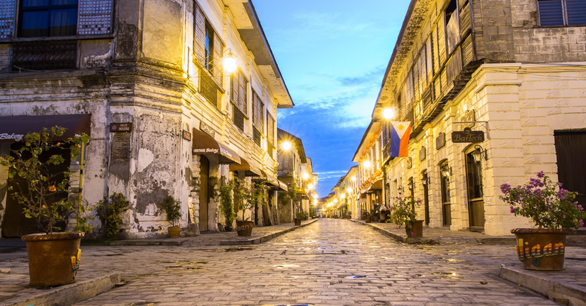

The Philippines has over 7,000 islands and is the perfect getaway to experience a mix of nature, culture, and fun. The geographical features of the Philippines ensure that there are natural attractions wherever you go. Whether you're headed to Luzon tourist spots, Visayas tourist spots, or Mindanao tourist spots, expect beautiful sights, unique attractions, friendly locals, and memorable experiences.

Though only 500 meters long, Calle Crisologo in Vigan, Ilocos Sur, is one of the most beautiful streets in the Philippines. It boasts centuries-old stone houses, lovely tungsten lamps, and antique cobblestone, where horse-drawn carriages or kalesas are still used for transport.
With 600 different species of butterflies, 600 different types of sea turtles nesting on white sand beaches, gigantic clam gardens in the ocean, dolphins close offshore, and a lush palm grove reminiscent of Gilligan's Island fever, Palawan is home to both land and marine natural reserves.
Mayon Volcano, active volcano, southeastern Luzon, Philippines, dominating the city of Legaspi. Called the world's most perfect volcanic cone because of the symmetry of its shape, it has a base 80 miles (130 km) in circumference and rises to 8,077 feet (2,462 metres) from the shores of Albay Gulf.